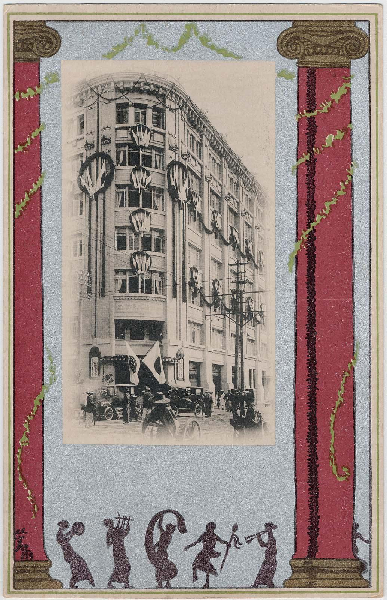
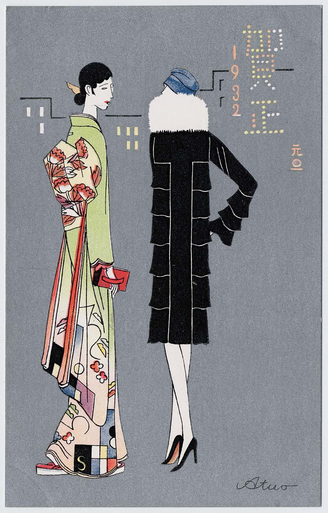

COMMEMORATING THE NEW BUILDING OF MITSUKOSHI DEPARTMENT STORE IN OSAKA
Sugiura Hisui (1876-1965)
Postcard
Late Meiji Era

Sugiura Hisui (1876-1965)
Postcard
Late Meiji Era
Of the many changes that contributed to Japan's modernization — its transformation into an internation, industrial, and urban society — two of the most pervasive were in visual and consumer culture. As the expatriate American writer Lafcadio Hearn noted in 1904, the Russo Japanese War then underway led to epochal changes in photography as well as to a boom in commerical goods bearing war-related deisgns. Ehagaki (picture postcards) were chief among the new commerical items whose popularity was born of war. Indeed, among teh war-themed goods, Hearn credited the Mitsukoshi Dry Goods Store with "the best...designs on the market." Although he attributed the Japanese passion for clever products to a "play impulse" that turned mundane things into artistic objects, it equally could be ascribed to burgeoning Japanese consumerism. During the three decades from the end fo teh Russo-Japanese War to the beginning of Japan's next major war in Asia in 1937, it was the floursihing commerical sector that stimulated most changes in popular design.

Atsuo
Postcard
Taishō-Early Shōwa Era

Odake Kokkan
From Mitsukoshi journal Jikō
Illustration
January 1, 1906
One of the expressions of this symbiosis between visual and consumer culture was the esugoroku (illustrated board game). Although they had been in use since the fifteenth century,
these games grew dramatically in popularity during the late Meiji and early Taishō eras (about 1906-1918) when they were distributed in the New Year's issues of the growing number of new magazines.
A good example is the hayari sugoroku (fashionable sugoroku) published in the January 1, 1906, issue of Jikō (Fashion), the Mitsukoshi house journal. Illustrated by Odake Kokkan (1880-1945),
the game board features twenty vignettes of modern life, most showing the well-to-do young women who were Mitsukoshi's core customers. In addition to a scene of a man taking photographs and one of a movie, there are pictures of women playing
tennus, cooking, knitting, playing Japanese and Western music, teaching school, riding bicycles, and doing ikebana (Japanese flower arrangement; the caption reveals that it is now popular in Europe)
Illustrations of men and women show them wearing Western fashion, attending a charity bazaar, viewing a triumphal review and participating in a patriotic garden party. IN addition, and most german here, one picture shows a
Mitsukoshi-issued artistic postcard, its caption explaining that ehagaki will remain fashionable in the New Year. This inclusion of postcards among stylish customs suggests...
*Read more in the full text